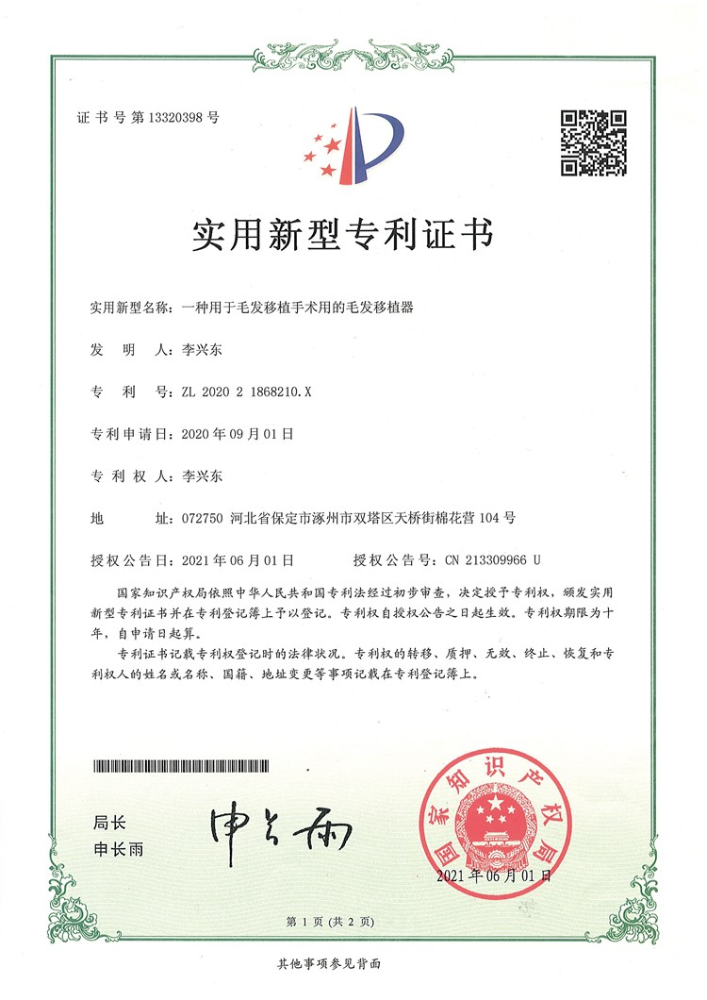

中國植髮醫院是中國領先的專業毛髮修復醫療集團。自2006年成立以來，我們在中國開創了微針植髮技術，並一直設定行業標準。
我們的使命很簡單：透過我們創新的微針技術，幫助來自世界各地的人們透過自然、永久的毛髮修復重拾自信。
在中國主要城市擁有30多家直營診所，我們提供全方位一站式解決方案，包括脫髮診斷、植髮手術、醫學護髮和防脫治療——一切都基於我們的理念：「好醫師 + 好技術 = 好效果」。
成立年份
診所數量
專利技術
服務患者
微針植髮領域的領導地位與認可
開創性地將微針植髮技術引入中國
一線城市植髮量領先
多項微針技術專利
中國主要城市直營診所
多次受邀於世界植髮大會演講
專業毛髮修復醫療團隊
被認可為「微針植髮先驅與領導者」
領先行業進入AI植髮5.0時代
塑造我們卓越之路的重要里程碑
在北京開設旗艦診所，開創性地將微針植髮技術引入中國。
以專利微針移植技術革新行業，實現前所未有的精準度和更快恢復時間。
快速擴張將我們的專業知識帶到中國10多個主要城市，讓更多人獲得高品質毛髮修復。
獲得享有盛譽的Sullivan認證，這是對我們在植髮領域卓越承諾的國際認可。
擴張至全國30多家診所，並取得10多項專利技術，鞏固我們作為行業創新者的地位。
我們繼續在創新方面處於領先地位，提供專門的國際患者服務，並持續研究推進毛髮修復科學。
擁有10多項專利，積極研究並不斷創新毛髮微針技術





定義我們身份和服務方式的核心原則
您的舒適、安全和滿意是我們的首要任務。我們聆聽您的目標，並制定尊重您獨特需求的個人化治療方案。
我們大力投資研發，不斷突破界限，為您帶來最先進、最有效的毛髮修復技術。
我們永不妥協於品質。每個手術都以極細緻的關注度進行，確保您喜愛的自然、長久效果。
我們相信完全透明。從諮詢到恢復，我們對期望、流程和結果保持誠實，建立長久關係。
我們的多學科團隊包括外科醫生、技術人員和支援人員，協調合作為您提供無縫、全面的護理。
我們自豪地為來自全球的患者服務，擁有英語工作人員和專門的國際患者支援，確保您的體驗舒適愉快。
誠實、正直，為每位患者提供優質護理
絕不虛假宣傳 - 我們的醫師經驗豐富、完全認證，並接受過毛髮修復技術的專業培訓
不混用技術 - 每個手術由專門的專家使用即時移植技術以達最佳效果
絕不妥協 - 我們提供不剃髮毛囊提取和不剃髮植入，方便舒適
無隱藏費用 - 我們醫院誠信經營，提供清晰、事前的透明價格
見證患者們令人驚嘆的變身


與滿意患者的珍貴時刻

與團隊合影慶祝植髮成功

與醫護人員慶祝驚人效果

快樂的患者分享令人驚嘆的毛髮修復之旅

患者與專家慶祝治療成功

微笑的患者展示新髮際線

興奮的患者展示變身成果

患者對毛髮修復結果感到非常滿意

患者以出色的植髮效果重新出發
來自全球滿意患者的聲音
"研究了植髮品牌排行後選擇這家，18年專業經驗讓人安心。全國30多家直營診所規模龐大，Sullivan認證更是品質保證，植髮醫院信譽沒話說！"
"在Google搜尋植髮診所比較好幾個月，這家醫院的口碑讓我印象深刻。18年專業經驗、10多項技術專利，加上國際認可的品質標準讓我決定選擇這裡。術後效果非常自然，植髮恢復期也很短，真的是世界級水准！"
"做了很多植髮診所比較，這家AI植髮5.0時代的領先者讓我印象深刻。微針植入筆技術專利、10萬多次成功手術，信譽有目共睹，選擇絕對正確！"
"在澳門看過植髮品牌排行，這家連續5年植髮量第一的醫院脫穎而出。自2006年開創微針技術，ISHRS演講嘉賓的國際認可，信譽絕對信得過！"
"新加坡也有植髮診所，但比較過植髮醫院信譽後還是決定來這裡。30多家診所遍布中國、1000多名醫師團隊，規模和實力都是一流的！"
"台灣到大陸做植髮最看重醫院信譽，這家擁有8項Sullivan認證、世界植髮大會演講經歷，植髮診所比較中絕對是首選。好醫師好技術等於好效果，名符其實！"
體驗我們現代舒適的設施

最先進的設施

在高級休息室放鬆

無菌先進設備

私密專業空間

舒適術後空間

溫暖歡迎入口
了解更多關於我們的診所和服務
點擊複製聯絡資訊
15810155700
+86 13730143529
hairtransplant@qq.com